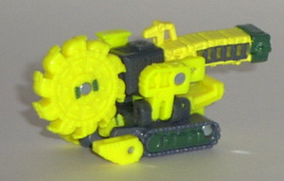
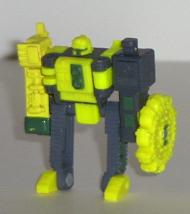
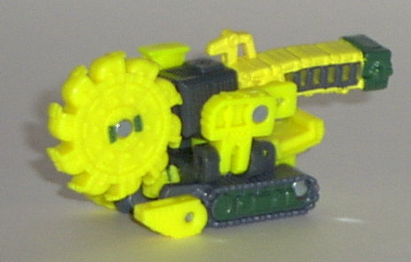
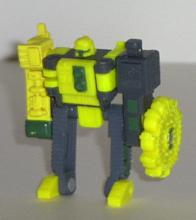
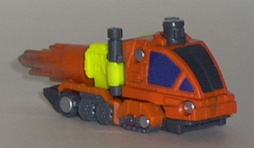
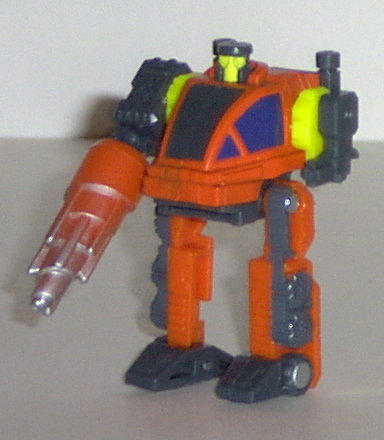
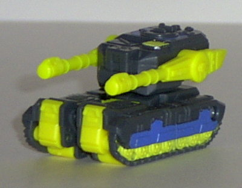
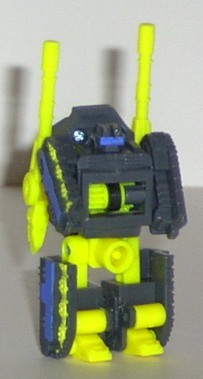
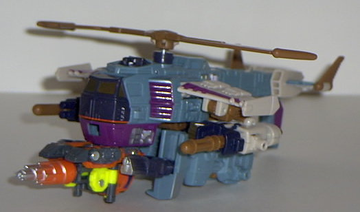

Buzzsaw
Buzzsaw
 
Difficulty of Transformation : Easy
Color Scheme : Dark gray, flat yellow, and dark green
Individual Rating : 5.5
Destruction
Team
Allegiance
: Minicon
Size
: Mini-Con (3-pack)
Team Gimmick
: Parts move when rolled
across a surface; also can combine with
Cyclonus
Overall Rating
: 6.1
Buzzsaw


Difficulty of Transformation
: Easy
Color Scheme
: Dark gray, flat yellow,
and dark green
Individual Rating
: 5.5
Vehicle mode is an excavator.
At first, it may look like this is some kind of mobile sawblade, but if
you look closely, you'll notice that the "sawblades" are actually buckets!
So, excavator it is. Even though this toy only actually has three different
colors on it, they're varied enough where you don't really notice. Normally,
so much yellow on a Transformer would bother me, but for some reason, it
manages to somehow "fit" on Buzzsaw. The paint detailing is pretty good,
although not spectacular (I personally wish a bit more paint detail had
been applied to the sawblade). The mold detailing is excellent, though,
especially on the sawblade and treads- really intricate stuff, there. Unfortunately,
this mode suffers a bit from the robot mode- the robot feet and head are
pretty darn obvious in this mode, and the robot chest panel just hangs
off the back. His gimmick is pretty cool, though- roll him along on a flat
surface and his sawblade spins! It worked pretty darn good, too. The Minicon
port is on the center underside of this mode, and the Minicon symbol is
on the top of the gray center portion.
Buzzsaw's robot mode
is so-so. On one hand, his robot head is pretty darn cool, as is the chest
panel. He also has a "ruff 'n tuff" look to him. And a chainsaw blade on
one arm always looks cool. On the other hand, though, the proportions for
this mode are a bit wonky. The legs are stiff and skinny, while the arms
are too chunky and big. Although the right arm has a molded-on hand on
one side of it, the left arm- the one with the sawblade on it- has no hand
molded on it, and it looks rather odd with the sawblade just hanging off
one side like it is without any hands. Also, Buzzsaw's Minicon port is
on his... butt... in this mode. Oookay... Buzzsaw's articulation for this
mode is average for a Minicon; he has shoulder, hip, waist, and head articulation.
Well, he technically has feet articulation, too, but it doesn't do him
any good.
Buzzsaw is about a mid-of-the-line
Minicon. He has some nice features, like his detailing and gimmicks, but
he has some bad features as well, such as his robot mode proportions and
a bunch of extras in his vehicle mode.
Drill
Bit


Difficulty of Transformation
: Very
Easy
Color Scheme
: Light orange, flat
yellow, dark gray, and some dark shiny blue and silver
Individual Rating
: 7.1
Vehicle mode is some
kind of drill vehicle. Anyways, this mode is pretty cool- love the color
scheme. The flat yellow looks a little out of place, but thankfully, there's
not much of it. Like Buzzsaw, Drill Bit has excellent mold detailing, with
miniature doors and the like- although this time around, he has good paint
detailing, too. The drill has a nice silver spray paint app on it, which
looks awesome, like some of it's been worn away after some hard drilling.
Although I'm not sure why the two side windows are painted, but the front
one isn't... One major thing bothers me about this mode, though- the robot
head is VERY blatantly just sitting there on top of the vehicle mode. It's
turned around so the face doesn't face outward (pun not intended), but
this doesn't help much. There's still this weird cap on the top of the
vehicle mode... His gimmick is neat, though. Roll him along and the drill
spins! Unfortunately, the gear clicks a lot, for some reason, and I'm told
that this isn't just mine. The Minicon port is on the bottom center of
this mode, and the Minicon symbol is molded on the top gray piece in front
of the drill.
Robot mode is wiggy.
He looks pretty durn cool for a little guy- I think the "potbelly" and
flat head gives him personality. Some people have problem with his disproportionate
arms- one ends in a huge (relatively) drill while the other is a puny gun-
but I think it's cool. I've always liked "strongarm" Transformers, and
Drill Bit is no exception. His legs are stiff-looking, but otherwise alright.
His articulation is average- he has shoulder, head, and hip articulation.
Like Buzzsaw, he also technically has feet articulation, although it's
useless except for during the transformation.
Drill Bit has an awesome
robot mode, and his vehicle mode is pretty cool, too. If you ignore the
robot head sticking out of the top, that is...
Dualor


Difficulty of Transformation
: Very
Easy
Color Scheme
: Dark gray, flat yellow,
and dark blue
Individual Rating
: 5.6
Vehicle mode is some
kind of pom-pom tank. I don't think this has a real-life counterpart, but
I could be wrong. Anyways, this mode looks decent, although I think the
front could look a little more solid instead of having a gap in the middle.
The robot head sticks out rather blatantly out of the back, as well. The
yellow doesn't match Dualor as well as it does Buzzsaw, and looks a bit
out of place on a tank. However, as with Drill Bit, both the paint detailing
and the mold detailing are stupenous, with wonderful detail especially
given to the tank treads and the top of the "entryway" hatch. By moving
Dualor, his pom-pom cannons reciprocate, which is pretty cool and complicated
for such a small guy, actually. Nifty. His Minicon port is on the bottom
center of this mode, and the Minicon symbol is on the front of the rotating
turret.
Robot mode is so-so.
It's a pretty uninspired transformation, though, and Dualor looks positively
chubby. Having the hands merely molded in on the inside of the tread halves
doesn't help much, either. The head is certainly original, though, and
the cannons hanging off the back look alright. His Minicon port in this
mode is on his.... well, I think you can see for yourself. I have NO idea
how this one got past the designers... Anyway, Dualor's articulation is,
again, average: His head, shoulders, waist, and hips can move. Just like
the other Destruction Team members, he also has "useless" feet articulation.
Dualor isn't so much
a bad toy as just really uninspired and a bit boring. His gimmick is fun,
but that's it. And his Minicon port is in a REALLY disturbing place in
robot mode...

As you can see, all
of the Destruction Team members can also combine in a special way with
Cyclonus' vehicle mode, to form extra weapons for him. By pulling Cyclonus'
rear trigger, not only does his rotor turn, but also the Destruction Team
member that is attached to him has its gimmick activated, as well! Pretty
cool that Cyclonus was built especially with these geared Minicons in mind.
Above he is shown combined with Drill Bit, but he can combine with all
three members. Drill Bit looks the best combined with him, though, as Dualor
adds too much undercarriage junk to him and Buzzsaw's sawblade is stubby
and off-center, so it doesn't look that good attached to him either. Unfortunately,
even though Drill Bit looks the best combined with him, his gear, again,
clicks a lot, so his gimmick doesn't always work this way...
The Destruction Team has some pretty cool gimmicks, and some awesome detailing. Drill Bit is a really good Minicon, but Buzzsaw and Dualor are merely average. Slightly above average as Minicon teams go.
Review by Beastbot